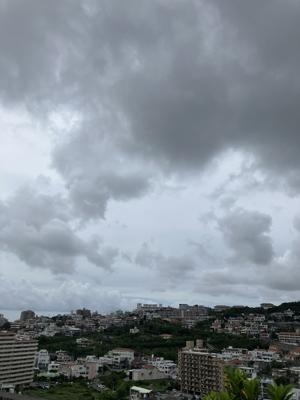
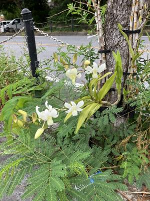

うるがいの話 ある日
最新: 忘れた【うるがいの話 ある日】とは 一日だけのプログです
『うるがいの話』の最新一日だけのプログで、通信料が少なく経済的だ。カニの画像をクリックすると全ての日付が載る『うるがいの話』サイトを表示します
|
|
【うるがいの話】 うるがい(ｳﾙｶﾞｲ urugai)とは、『もずくがに』の名前でとても大きくなります。 |
|---|---|
|
|
【カミマヤーの話】 猫のことを方言でマヤーといいます。カミマヤー（kamimayaa）とは、神の猫のことです。 |
|
【たながぁの音楽】 たながぁ（ﾀﾅｶﾞｰ tanagaa）とは手長えびのことで、何種類かあり大きいのは車 エビぐらいになります。 |

|
【ぶながぁの話】 ぶながぁ(ﾌﾞﾅｶﾞｰ bunagaa)とは、赤い髪の毛、赤い身体、そして身長は１ｍ２０ｃｍ ぐらい、川の蟹を食べているの目撃された。場所は沖縄県国頭郡大宜味村のと ある村僕の隣近所に住んでいる爺さんから、聞いた話です。 |
|
|
【ギーマの話】 ギーマ(giima)とは、山原の里山に咲くスズランに似た、 花を付けます。実は食べられます、 気が付くと口の周りが紫になっています。 |
2024年08月06日 (火）忘れた
15:02

イコライザー（ｅｑｕａｌｉｚｅｒ）．平衡・平準化（イコライズ、ｅｑｕ
ａｌｉｚｅ）する働きを持つ装置。ネットフレックスの韓国ドラマにも飽き
たので、Ａｍａｚｏｎプライムビデオの特典対象作品（無料）でもと『イコ
ライザー ＴＨＥ ＦＩＮＡＬ（２０２３）』をみる。なかなか、そして日
をまたぎ引き続き『イコライザ（２０１４年）』をみる。しばらくするとい
ぜん見たような気がする・・・、早送り再生が利用できないので中断する。
そして、次の日、見ようとすると「続けて観る」がない！、あれ？、検索を
かけると４百円払わないといけない、諦めて『イコライザ２（２０１８年）
』をみる。あれ、これも見たような気がする。それにしても長い、中断する
と・・・・頑張ってエンディングまでみる。それにしても、中断した『イコ
ライザ』がなぜ見れなくなったのか、ネットで調べてみた。特典対象作品で
なくなったから！、フムフム、別の作品で中断したあと「続けて観る」がで
るか、試してみるかとＡｍａｚｏｎプライムビデオをみる。お！、なんと「
続けて観る」に『イコライザ』があるのではないか、残りの１時間４０分ほ
どかけて最後までみる。ン、なんか意味不明、マ、いいか。ＴＨＥ ＦＩＮ
ＡＬを除けば、二つの先品は過去みたものの、記憶は５％以下かな。人の名
前など、なかなか記憶したことが出てこない今日この頃、でも忘れることも
メリットを感じた。悲しく辛かったこと（嬉しかったこと）も、だんだん記
憶が薄れていく。
おっと認知症か？、いやいや、とある本を読んでいると７つチャクラの名称
を覚えないと読みずらい、で覚えましたよ（間の変なやつに置き換えて）。
ムラダーラ 村ダーラ 仙骨
スワディースターナ 座ディース棚 おへそ
マニプラ 間にプラ 腹部 胃
アナハタ 穴ハタ 心臓
ビジュタ 美ジュタ 喉
アジナ 味な 眉間
サハスラーラ 砂波スラーラ 頭頂部
ウォーキングで道沿いに花を咲かせる蘭はほとんどが白であることに気づく

１４時５３分 ビットコインの総資産 ￥２３、６６６（↑２，３８２）